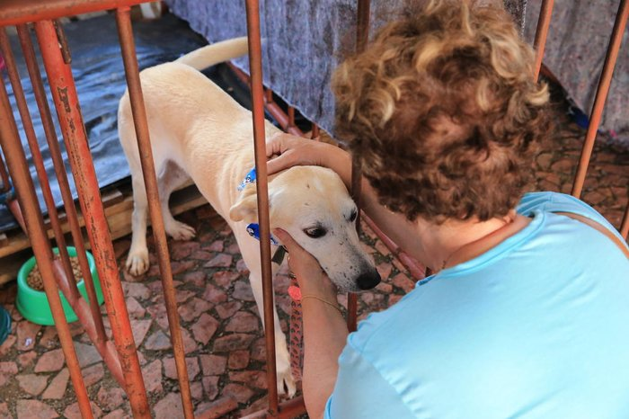
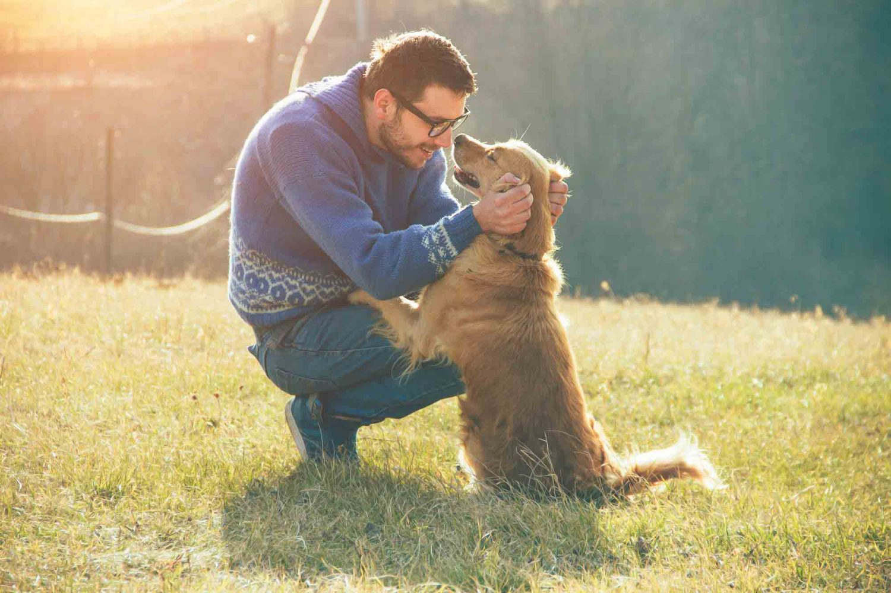
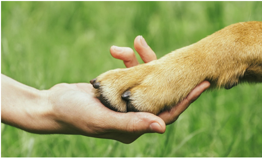

Resgate e recuperação
O projeto tem como objetivo resgatar animais encontrados em situação de risco ou abandono e oferecer os cuidados necessários para sua recuperação.
O Instituto Patinhas Unidas desenvolve projetos voltados para a proteção, recuperação e adoção de cães e gatos em situação de abandono.

O projeto tem como objetivo resgatar animais encontrados em situação de risco ou abandono e oferecer os cuidados necessários para sua recuperação.

Após a recuperação, os animais são preparados para encontrar um novo lar com famílias que ofereçam atenção e carinho.

As campanhas arrecadam recursos e materiais necessários para manter os cuidados diários com os animais no abrigo.
Quero DoarNossa equipe faz plantões semanais para resgate de animais feridos. Atualmente atendemos mais de 20 chamados por mês.
Seja VoluntárioTodos os sábados abrimos nossa sede para visitas. Todos os animais são vacinados e castrados.
Quero Adotar